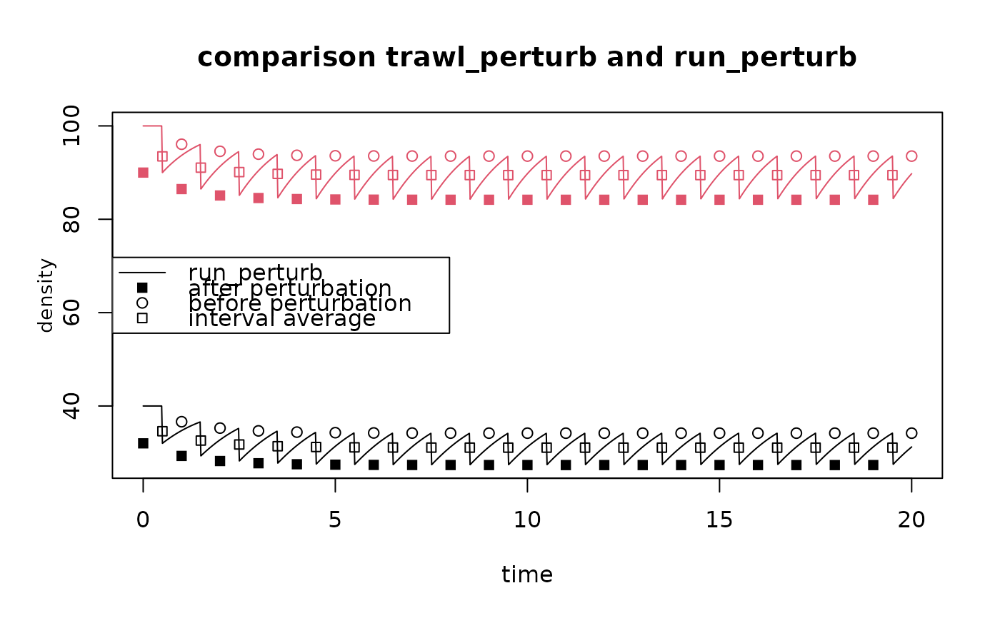
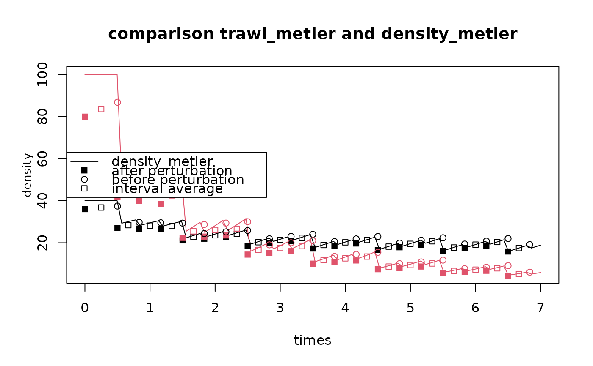

Estimates density before and after a trawling event, or the average density between trawls.
trawlingdensity.Rdtrawl_perturb and trawl_metier calculates the density of taxa immediately at the start and end after the n-th trawling event, and the mean density inbetween trawling events, for one metier and multiple metiers respectively.
Usage
trawl_perturb (K = 1, r = 1, d = 0.1,
parms = data.frame(K = K, r = r, d = d),
sar = 1, D0 = parms[["K"]], n = 1)
trawl_metier (K = 1, r = 1,
parms = data.frame(K = K, r = r),
d = data.frame(0.1, 0.1),
sar = data.frame(1, 2),
D0 = parms[["K"]], n = 1)Arguments
- sar
fishing intensity, estimated as Swept Area Ratio, units e.g. [m2/m2/year]. For
trawl_perturb: one number. Fortrawl_metier, a data.frame with one value per metier.- r
the rate of increase of each taxon, units e.g. [/year]. One number, or a vector.
- d
depletion fraction due to fishing. For
trawl_perturb: one number, or a vector of same length asr. Fortrawl_metier, a data.frame with nrows = length(r), and ncols = number of metiers, containing one number per metier and per taxon.- K
carrying capacity. One number, or a vector of same length as
r.- parms
a data.frame with all parameters.
- D0
initial density. One number, or a vector of length = nrow(parms).
- n
number of fishing events. One number, or a vector.
Value
Returns a data.frame, with the following columns:
K, r, d, D0: the model parameters,times, the start time of the trawling events as in argumentn,times_end, the end time of the trawling events as in argumentn,ntrawl_from, the number of the trawl at the start of the trawling interval (n),ntrawl_to, the number of the trawl at the end of the trawling interval (n+1),density, the density averaged over the trawling interval,density_start, the density after trawling at the n-th trawling interval,density_end, the density at the end of the n-th trawling interval, before the next trawling.
See also
steady_perturb for steady-state calculations.
run_perturb for how to run a disturbance model.
Traits_nioz, for trait databases in package Btrait.
MWTL for data sets on which fishing can be imposed.
map_key for simple plotting functions.
References
Hiddink, JG, Jennings, S, Sciberras, M, et al., 2019. Assessing bottom trawling impacts based on the longevity of benthic invertebrates. J Appl Ecol 56: 1075-1084. https://doi.org/10.1111/1365-2664.13278
Hiddink, Jan Geert, Simon Jennings, Marija Sciberras, Claire L. Szostek, Kathryn M. Hughes, Nick Ellis, Adriaan D. Rijnsdorp, Robert A. McConnaughey, Tessa Mazor, Ray Hilborn, Jeremy S. Collie, C. Roland Pitcher, Ricardo O. Amoroso, Ana M. Parma, Petri Suuronen, and Michel J. Kaiser, 2017. Global analysis of depletion and recovery of seabed biota after bottom trawling disturbance. Proc. Nat. Aca. Sci, 114 (31) 8301-8306. https://doi.org/10.1073/pnas.161885811.
C.R. Pitcher, N. Ellis, S. Jennings, J.G. Hiddink, T. Mazor, M.J.Kaiser, M.I. Kangas, R.A. McConnaughey, A.M. Parma, A.D. Rijnsdorp, P. Suuronen, J.S. Collie, R. Amoroso, K.M. Hughes and R. Hilborn, 2017. Estimating the sustainability of towed fishing-gearimpacts on seabed habitats: a simple quantitative riskassessment method applicable to data-limited fisheries. Methods in Ecology and Evolution,8,472-480doi: 10.1111/2041-210X.12705
Examples
## ====================================================
## Density for one fishing events
## ====================================================
D1 <- trawl_perturb(n = 1,
K = 100)
D1
#> K r d sar D0 times times_end ntrawl_from ntrawl_to density
#> 1 100 1 0.1 1 100 0 1 1 2 93.47017
#> density_start density_end
#> 1 90 96.07297
## ====================================================
## Density for a sequence of fishing events
## ====================================================
D2 <- trawl_perturb(n = 1:10,
K = 100)
D2
#> K r d sar D0 times times_end ntrawl_from ntrawl_to density
#> 1 100 1 0.1 1 100 0 1 1 2 93.47017
#> 2 100 1 0.1 1 100 1 2 2 3 91.05639
#> 3 100 1 0.1 1 100 2 3 3 4 90.10764
#> 4 100 1 0.1 1 100 3 4 4 5 89.72587
#> 5 100 1 0.1 1 100 4 5 5 6 89.57081
#> 6 100 1 0.1 1 100 5 6 6 7 89.50760
#> 7 100 1 0.1 1 100 6 7 7 8 89.48178
#> 8 100 1 0.1 1 100 7 8 8 9 89.47124
#> 9 100 1 0.1 1 100 8 9 9 10 89.46693
#> 10 100 1 0.1 1 100 9 10 10 11 89.46517
#> density_start density_end
#> 1 90.00000 96.07297
#> 2 86.46567 94.55518
#> 3 85.09966 93.94849
#> 4 84.55364 93.70274
#> 5 84.33247 93.60266
#> 6 84.24239 93.56181
#> 7 84.20563 93.54512
#> 8 84.19061 93.53831
#> 9 84.18448 93.53552
#> 10 84.18197 93.53438
## ====================================================
## Density for a sequence of fishing events
## and multiple parameters
## ====================================================
D3 <- trawl_perturb(n = 1:5,
K = c(10, 20))
D3
#> K r d sar D0 times times_end ntrawl_from ntrawl_to density
#> 1 10 1 0.1 1 10 0 1 1 2 9.347017
#> 2 10 1 0.1 1 10 1 2 2 3 9.105639
#> 3 10 1 0.1 1 10 2 3 3 4 9.010764
#> 4 10 1 0.1 1 10 3 4 4 5 8.972587
#> 5 10 1 0.1 1 10 4 5 5 6 8.957081
#> 6 20 1 0.1 1 20 0 1 1 2 18.694033
#> 7 20 1 0.1 1 20 1 2 2 3 18.211279
#> 8 20 1 0.1 1 20 2 3 3 4 18.021527
#> 9 20 1 0.1 1 20 3 4 4 5 17.945174
#> 10 20 1 0.1 1 20 4 5 5 6 17.914163
#> density_start density_end
#> 1 9.000000 9.607297
#> 2 8.646567 9.455518
#> 3 8.509966 9.394849
#> 4 8.455364 9.370274
#> 5 8.433247 9.360266
#> 6 18.000000 19.214594
#> 7 17.293135 18.911035
#> 8 17.019932 18.789698
#> 9 16.910728 18.740548
#> 10 16.866493 18.720532
## ====================================================
## compare trawl_perturb with the dynamic model solution
## ====================================================
S <- 1 # swept area ratio
tend <- 20
fishD <- trawl_perturb(n = 1:tend,
d = c(0.2, 0.1),
K = c(40, 100),
sar = S)
head(fishD)
#> K r d sar D0 times times_end ntrawl_from ntrawl_to density density_start
#> 1 40 1 0.2 1 40 0 1 1 2 34.59359 32.00000
#> 2 40 1 0.2 1 40 1 2 2 3 32.59422 29.30484
#> 3 40 1 0.2 1 40 2 3 3 4 31.75429 28.21217
#> 4 40 1 0.2 1 40 3 4 4 5 31.38313 27.73660
#> 5 40 1 0.2 1 40 4 5 5 6 31.21550 27.52325
#> 6 40 1 0.2 1 40 5 6 6 7 31.13904 27.42624
#> density_end
#> 1 36.63105
#> 2 35.26522
#> 3 34.67075
#> 4 34.40406
#> 5 34.28280
#> 6 34.22732
# dynamic run
times <- seq(from = 0, to = tend, length.out = 1000)
parms <- list(r = c(1, 1),
K = c(40, 100),
d = c(0.2, 0.1) )
Dens <- run_perturb(parms = parms,
times = times,
sar = S) # can only have one number for sar
# compare
matplot.0D(Dens,
lty = 1, legend = FALSE,
ylab = "density",
main = "comparison trawl_perturb and run_perturb")
with (fishD,
points(times, fishD$density_start ,
col = factor(K), pch = 15))
with (fishD,
points(times_end, density_end ,
col = factor(K), pch = 1))
with (fishD,
points(x = 0.5*(times+times_end), y = density ,
col = factor(K), pch = 22))
legend("left", lty = c(1, NA, NA, NA), pch = c(NA, 15, 1, 22),
legend=c("run_perturb", "after perturbation",
"before perturbation", "interval average"))

## ====================================================
## compare trawl_metier with the dynamic model solution
## ====================================================
S <- data.frame(1, 3) # swept area ratio
d = data.frame(rbind(c(0.2, 0.1),
c(0.4, 0.2)))
tend <- 20
fishD <- trawl_metier (n = 1:tend,
d = d,
K = c(40, 100),
sar = S)
head(fishD)
#> K r D0 times times_end ntrawl_from ntrawl_to density density_start
#> 1 40 1 40 0.0000000 0.5000000 1 2 36.78864 36.00000
#> 2 40 1 40 0.5000000 0.8333333 2 3 28.38467 26.98165
#> 3 40 1 40 0.8333333 1.1666667 3 4 28.16887 26.75150
#> 4 40 1 40 1.1666667 1.5000000 4 5 27.99941 26.57107
#> 5 40 1 40 1.5000000 1.8333333 5 6 22.78654 21.14332
#> 6 40 1 40 1.8333333 2.1666667 6 7 23.58950 21.96409
#> density_end
#> 1 37.47451
#> 2 29.72389
#> 3 29.52341
#> 4 29.36572
#> 5 24.40454
#> 6 25.18284
# dynamic run
times <- seq(from = 0, to = 7, length.out = 100)
Dens <- density_metier(d = d,
K = c(40, 100),
sar = S,
times = times,
as.deSolve = TRUE)
# compare
matplot.0D(Dens,
lty = 1, legend = FALSE,
ylab = "density",
main = "comparison trawl_metier and density_metier")
with (fishD,
points(times, fishD$density_start ,
col = factor(K), pch = 15))
with (fishD,
points(times_end, density_end ,
col = factor(K), pch = 1))
with (fishD,
points(x = 0.5*(times+times_end), y = density ,
col = factor(K), pch = 22))
legend("left", lty = c(1, NA, NA, NA), pch = c(NA, 15, 1, 22),
legend=c("density_metier", "after perturbation",
"before perturbation", "interval average"))
